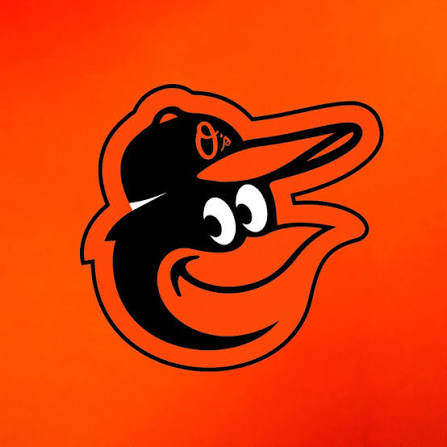

Incoming
Computer Vision Engineer Intern
Baltimore Orioles- Selected to conduct applied computer-vision research for Baseball Operations, culminating in a Davidson College honors thesis in computer science.
Computer Vision
Python
Applied Research